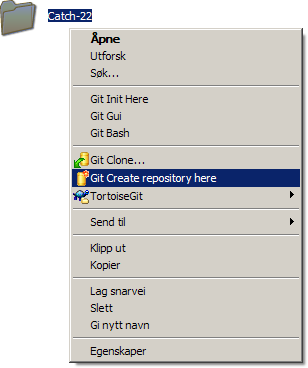
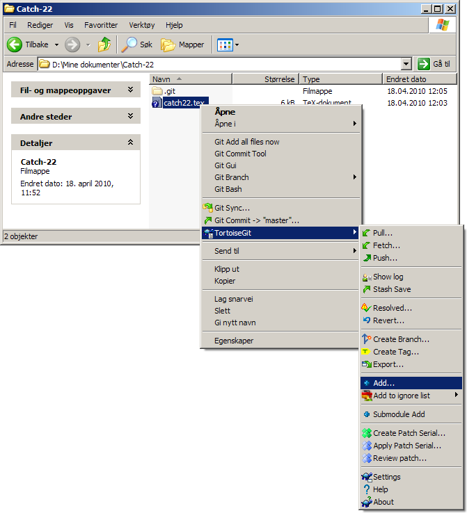
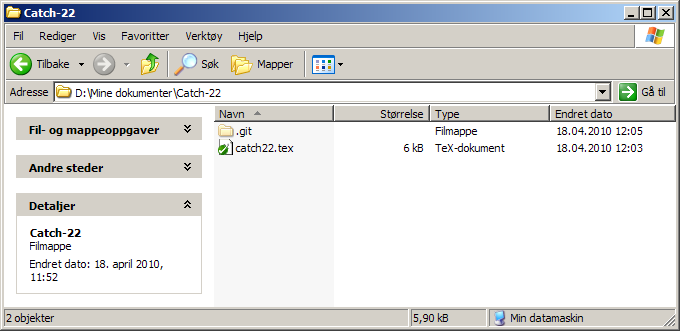
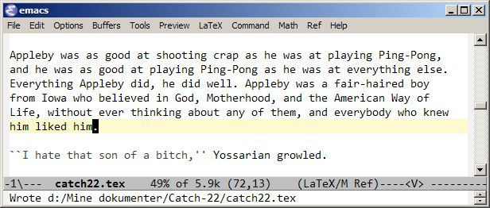
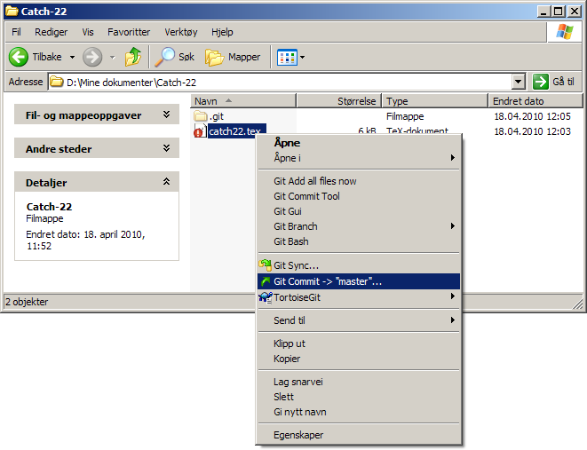
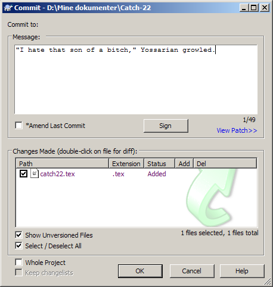

Innføring i versjonskontroll
Før vi begynner, installer Mercurial eller Git (msysGit på Windows), samt TortoiseHg eller TortoiseGit. De siste er ikke strengt nødvendige, men gir et felles brukergrensesnitt, slik at du kan følge denne veiledningen uansett hva du velger.
Første steg er å initialisere et repository. Høyreklikk på prosjektmappen din og velg Create repository here:

I tillegg må vi inn i mappen, markere de aktuelle filene og legge dem til. (Du kan ha filer i repo’et ditt som ikke er under versjonskontroll: De vises med et blått spørsmålstegn, som under.) Her høyreklikker vi på catch22.tex og velger TortoiseGit → Add:

Da er vi klare! Filen er nå grønn, ettersom de siste endringene er sjekket inn:

La oss gjøre noen nye endringer. Vi åpner catch22.tex i en teksteditor, legger til litt tekst og lagrer:

Nå blir filen rød, fordi det er avvik mellom den og det som er sjekket inn siden sist. For å sjekke inn, høyreklikker vi på filen (eller den overordnede mappen) og velger Commit:

Vi får opp et tekstfelt hvor kan skrive et kort sammendrag av hva vi har gjort:

Suksess! Filen er nå oppdatert og grønn igjen.
Stort mer er det ikke. Du kan opprette en konto på GitHub eller BitBucket og synkronisere arbeidet ditt mot en ekstern server, men i utgangspunktet gjøres alt lokalt (distribuert). Du sjekker inn arbeidet ditt så ofte du føler for det, kanskje ved arbeidsdagens slutt. For å se hvordan prosjektet skrider fremover, høyreklikk på filen/mappen og velg TortoiseGit → Show log.
Lykke til! :)
(Fortsatt ikke overbevist? Les om fordelene med versjonskontroll.)